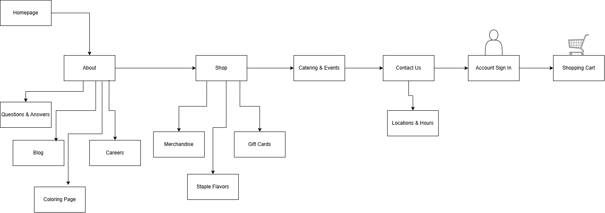
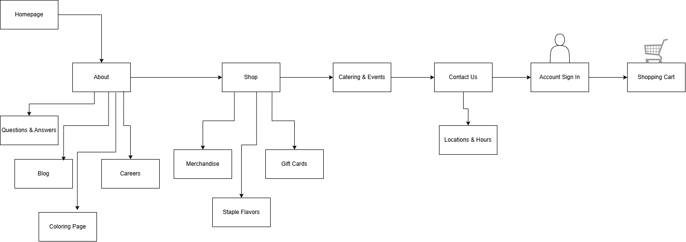

If you would rather check out the direct document, click here!
I decided that I want to create a new website for Nicey Treat, which is an Indianapolis based popsicle shop. They are close to Butler University, which is where I attend school. In addition, I am currently working on a social media and digital marketing campaign for another class for Nicey.
I do not own the business, nor do I work there. Even though this is for a real client, they did not hire me for this project and it would interfere with my freelance work. Instead, I will be using their photos, logos, and other assets to create a new website for my portfolio. Since it is for a school project, it is acceptable to evaluate their current website and make it better for portfolio work. I will have to complete some research, which other than creating the actual website, the content is all available on their current website and social media pages. I have also already done a lot of research on this client, such as target audience, buyer persona, buyer's journey, and other UI/UX practices.
Outside of HTML and CSS validation processes, one way to test this website is to have someone other than myself navigate it. For my social media and digital marketing class, we set up a test of three tasks that we asked a user to complete without any prior experience on the website. They were simple tasks, such as to locate the menu and a specific flavor. This should be something easy to find because a lot of people are typically curious about what flavors an ice cream novelty shop offers. Therefore, I will set up a similar test for my site and ask for any feedback on the overall design and usability. One other important part is to make sure that the website checks all the boxes on an accessibility test, such as coloring and font sizes. I will check how my website displays on all major browsers, such as Microsoft Edge, Google Chrome, Safari, Firefox, and Bing. Firefox and Bing are definitely used less than the other three, but it is still worth verifying.
Nicey Treat is an Indianapolis popsicle shop that specializes in hand made ice pops and ice cream pies. The goal of this business is to not only sell popsicles and cater events, but to also promote a positive atmosphere that all ages can enjoy during their operating season. This is typically from March to September, but can vary depending on the year and weather. The purpose of this website is to display their ice pops, catering and events options, contact information, and their online shop. They want to display their brand to encourage people to choose Nicey Treat for all their ice pop needs, and you need a good website to do so.
There are two main target audiences: Generation Z and young families. Gen Z is a huge focus because both of their locations are in close proximity to a few colleges, along with high schools. It is in walking distance from Butler University, and Marian University and Indiana University Indianapolis are not too far off. The distance is a huge factor, but also the price of each individual ice pop. It is a cheaper option compared to other local ice cream shops, and it is budget-friendly for the quality of the ice pop. The second target audience would be young families because young children love ice cream, and the walkability of Nicey Treat makes it a great summer spot. Based on these audiences, the website will need to be easy to navigate for efficiency and maintain the bright color scheme they have right now. These audiences are busy people, and they do not have time to scroll around on a site; they are there for one thing.
Content I want to create that is not already on their website would be a seasonal flavors section that rotates. This might be difficult, but I am thinking I can go back through their social media and find their old flavors to reintroduce per season. This is the main instance where the website will need to be updated, to simply change out this season's flavors.
I think the website will stay pretty consistent since they have one overarching business goal. To make it easily maintained, leaving comments to explain what each section is on the website is incredibly helpful. This makes the process of edits incredibly easy, especially if it is a new designer. Also, the seasonal flavors can be a commented out section so it does not have to be rewritten each time. Maintenance will occur every few months, and updates to the shop should every few days to ensure that out of stock products are marked properly on the site.
The website navigation is confusing on the current site, so I wanted to completely rework it. The main changes from the current site is the make the flavors under the shop tab, along with the merchandise and gift cards. From our usability test, all users clicked the shop tab first to locate the menu. Additionally, I moved locations and hours under the contact us tab. The homepage will be the Nicey logo, with a basic navigation bar with dropdowns next to the logo at the top of the page.
 

Since there is a shop part of the website, e-commerce is needed. This allows the customers to check out their shopping cart while making sure their payment information is secure. A login feature is needed because that is how your track order status and past orders, and this will require a password. After choosing a host with good security features, it is important to implement employee login to secure customers payment information. Additionally, the login for the hosting system is for employees only so that they can make changes on the website if needed. Changes can be made that crash a website, so it is important to have the files backed up somewhere so that you do not lose all your work. This data should be stored on a physical server. Last, website testing should occur frequently to ensure that issues do not go unresolved for a long time. The sooner something is fixed, the more likely it won’t create larger issues.
I believe that choosing an established website hosting service is extremely important, such as GoDaddy. There is a reason why these companies are trusted, and they have years of experience keeping websites secure. Another selection protocol would be to have SSL, shopping cart, and login features. It is important that customers feel safe when putting in their payment information, so having a secure connection is important. HTML and CSS will need to be supported, along with JavaScript to incorporate website motion. Since this website is already live, they already have a domain name. I think this is a good domain name, which is niceytreat.com.
I have already completed some keyword research, and some phrases that should be implemented include “popsicle broad ripple,” “popsicle fishers,” “popsicle near indy,” and “cheap frozen treat.” These words will be incorporated throughout the content to optimize the website. Another strategy would be to promote website content on social media, such as posting the new seasonal flavor with a link in the caption to the website. Additionally, if Nicey had a small in-house marketing team, they could write blogs that would be promoted on social media, creating more external links. One blog idea could be to create a list of top 10 flavors of popsicles, or how to make poptails. This can increase ranking on search engines.
What is SSL (Secure Sockets Layer)?
9 Steps for Creating a Secure Website - Make Your Site Secure